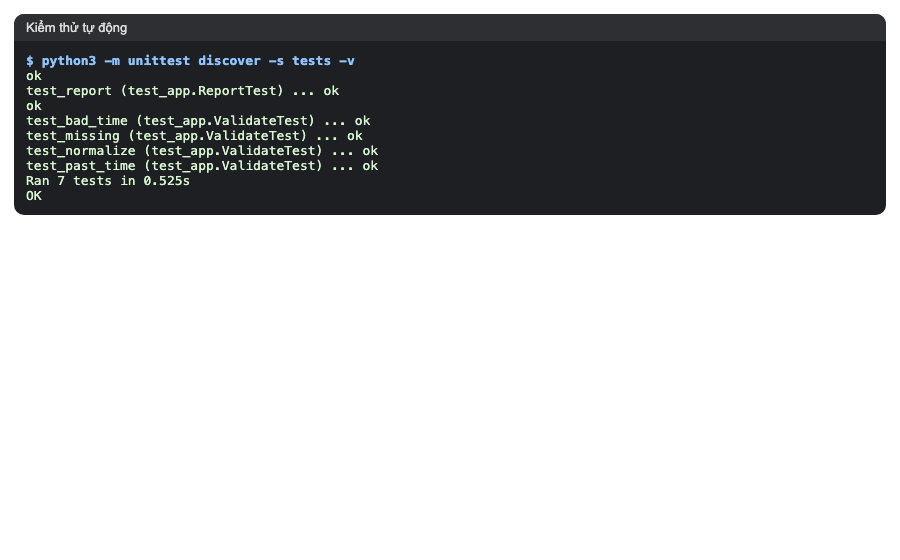
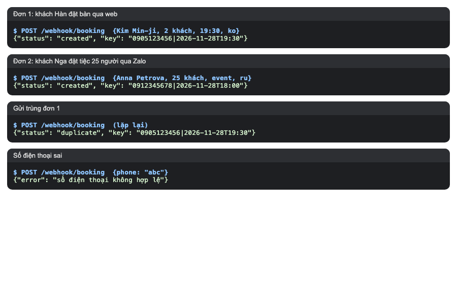
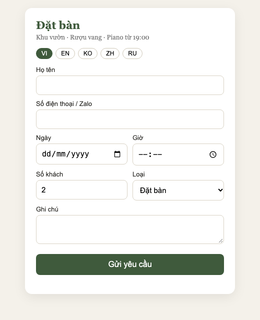

Tài liệu giải thích hệ thống làm gì, đã kiểm thử ra sao, khớp với cách Casa Mika vận hành tới đâu, và cách chạy từng bước.
Casa Mika nhận khách qua nhiều đường: nút Reserve dẫn sang Google Maps, điện thoại, Zalo, Facebook, khách đặt tiệc riêng và tiệc cưới. Quán mở từ sáng tới khuya, nhiều ca, khách nói nhiều thứ tiếng (website có 7 ngôn ngữ). Khi đơn nằm rải rác ở nhiều nơi, dễ sót đơn, quản lý không biết tối nay có bao nhiêu khách, tiệc lớn không được chuẩn bị trước.
Hệ thống gom mọi đơn về một Google Sheet, báo ngay cho quản lý qua Telegram hoặc Zalo, đánh dấu tiệc riêng và đoàn lớn, gửi báo cáo lúc 22h, và tự báo khi có lỗi.
Kiểm: chuẩn hóa số điện thoại +84, thiếu trường, giờ sai định dạng, giờ đã qua, gửi thông báo thử lại 3 lần khi mạng lỗi, luồng webhook đầy đủ, báo cáo ngày.

- Khách Hàn đặt bàn 2 người lúc 19:30, ghi chú "bàn gần piano" → nhận đơn.
- Khách Nga đặt tiệc sinh nhật 25 người qua Zalo → nhận đơn, gắn nhãn tiệc riêng và đoàn lớn.
- Gửi lại đơn của khách Hàn → hệ thống nhận ra trùng, không ghi hai lần.
- Số điện thoại "abc" → bị từ chối, báo rõ lý do.



Hiện nút Reserve đưa khách rời website sang Google Maps, quán không giữ được dữ liệu khách. Form này đặt ngay trên casamika.com, có tiếng Việt, Anh, Hàn, Trung, Nga, có lựa chọn "Tiệc riêng / sự kiện". Đơn đi thẳng vào hệ thống ở trên.
| Tiếng Việt | Tiếng Hàn |
|---|---|
 |  |
| Nhu cầu của Casa Mika | Hệ thống hiện tại | Mức khớp |
|---|---|---|
| Gom đơn từ web, Zalo, Facebook về một chỗ | Có: webhook + n8n + Google Sheet | Khớp |
| Tiệc riêng, tiệc cưới, đoàn lớn | Có: trường type, nhãn 🥂 và 🎉, ngưỡng đoàn lớn chỉnh được | Khớp |
| Khách nhiều quốc tịch | Form 5 ngôn ngữ, lưu ngôn ngữ khách để nhân viên chuẩn bị | Khớp một phần (web có 7 ngôn ngữ, form chưa có Đức, Thái) |
| Báo quản lý qua Zalo hoặc Telegram | Có cả hai, chọn bằng một biến | Khớp |
| Đơn từ Google Maps Reserve | Chưa nối tự động. Google chỉ mở cho đối tác đặt bàn chính thức. Tạm thời lễ tân nhập vào Sheet, hoặc thay nút Reserve bằng form của quán | Chưa khớp |
| Đơn qua điện thoại | Lễ tân nhập Sheet hoặc dùng form | Khớp một phần |
| Quản lý số bàn, sức chứa từng khu (vườn, nhà kính) | Chưa có | Chưa khớp, làm ở tháng 2 |
| Nhắn xác nhận tự động cho khách | Chưa có. Zalo OA chỉ nhắn được khách đã quan tâm OA hoặc qua ZNS có mẫu được duyệt | Chưa khớp, cần OA của quán |
| Nối với POS đang dùng | Chưa biết quán dùng POS nào | Cần hỏi khi phỏng vấn |
Kết luận: phần lõi (nhận đơn, kiểm dữ liệu, gom về Sheet, báo quản lý, báo cáo, cảnh báo lỗi) đã chạy và khớp. Ba phần cần thông tin nội bộ mới làm tiếp được: Google Reserve, sơ đồ bàn, Zalo OA và POS.
git clone https://github.com/yeuvietsub1520/casa-ops-automation cd casa-ops-automation python3 -m unittest discover -s tests -v # 7 bài phải OK NOTIFY_CHANNEL=log python3 -m app.server # mở http://localhost:8080/booking
Điền form, bấm Gửi. Cửa sổ terminal hiện dòng NOTIFY: Đặt bàn mới….
1. Trong Telegram, nhắn @BotFather lệnh /newbot, đặt tên, nhận token.
2. Thêm bot vào nhóm quản lý, lấy chat id.
3. Tạo file .env từ .env.example, điền NOTIFY_CHANNEL=telegram, TELEGRAM_BOT_TOKEN, TELEGRAM_CHAT_ID.
4. Chạy lại server, gửi một đơn thử, tin nhắn hiện trong nhóm.
Điền NOTIFY_CHANNEL=zalo, ZALO_OA_TOKEN, ZALO_USER_ID (người nhận phải là người đã quan tâm OA).
Tạo Sheet có trang "DatBan". Trong n8n tạo kết nối Google Sheets, điền SHEET_ID vào .env.
docker compose up -d docker compose exec n8n n8n import:workflow --separate --input=/workflows
Mở n8n ở cổng 5678, bật 3 workflow: đặt bàn, cảnh báo lỗi, báo cáo 22h.
Thêm trang /reserve hoặc đổi nút Reserve trỏ tới form. Bật WEBHOOK_SECRET khi đi thật.
"Khách đặt qua web, Zalo hay Facebook đều đi vào một webhook. Hệ thống kiểm tra số điện thoại, giờ, số khách, chống trùng, rồi ghi vào Google Sheet. Quản lý nhận tin ngay trên Telegram hoặc Zalo, tiệc riêng và đoàn lớn được đánh dấu. 22h có báo cáo trong ngày. Workflow nào lỗi thì báo về ngay. Phần Google Reserve, sơ đồ bàn và POS em cần xem hệ thống nội bộ của quán để nối tiếp."